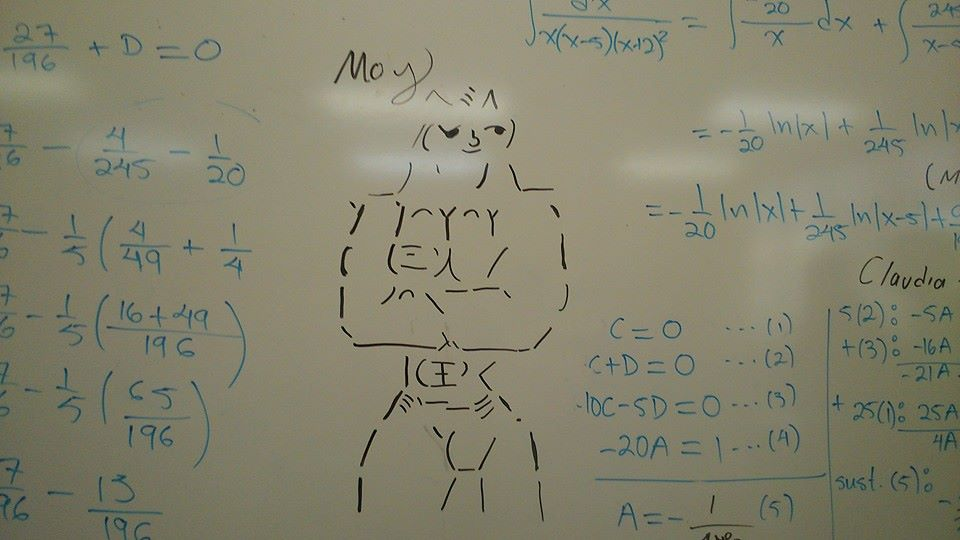
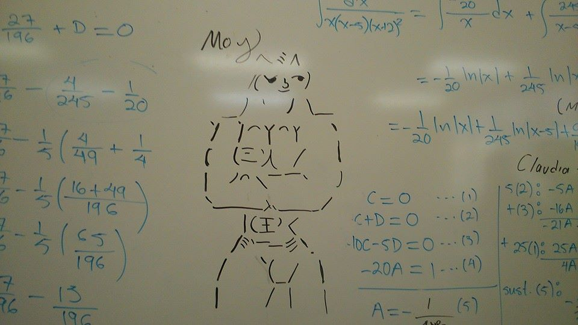
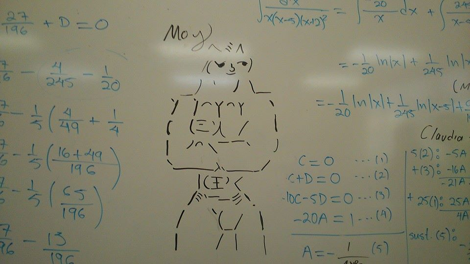
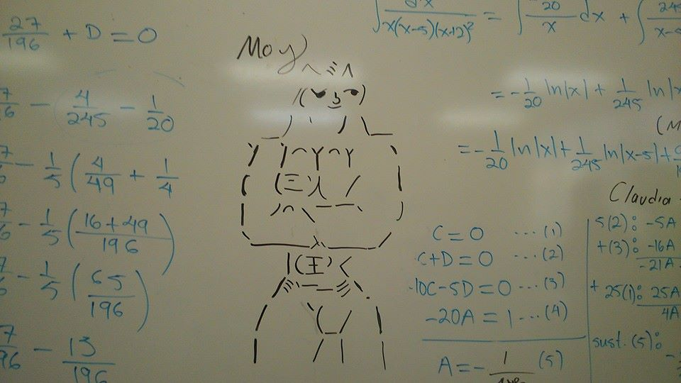

Ciudad de México
ARKCONN
Conócenos
INTRACIUDAD
Conoce más del servicio exclusivo de Intraciudad
Sensualidad
Smash es precioso :3
Moy
Moy Moy Moy Moy
Smash
Y así estuvo Maku con su Smash
Foto Histórica
Wolf <3
Krystal
A quién injustamente no se incluyó
 



 
